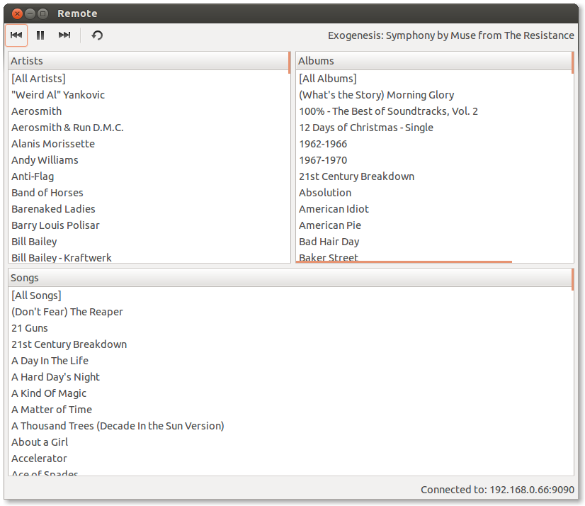

A simple program for remote controlling xbmc installations, written in Python and using the new JSON API
How Does it work?
XBMC Remote connects to XBMC (locally or over a network) over TCP and sends and receives data according to the JSON-RPC API
What can it do?
At the moment it can control playback and list the music library. It supports XBMC Dharma and (partially) Eden. It can be controlled by the MPRIS D-Bus interface, for instance by Ubuntu Unity's sound menu and several Gnome Shell extensions.
Getting XBMC Remote
On Ubuntu, it's easy. Just add my ppa to your software sources and install xbmcremote
$ sudo add-apt-repository
$ sudo apt-get update
$ sudo apt-get install xbmcremoteAuthor
Written by Ben Spiers (@NamelessOne2345) using Rick Spencer's Quickly RAD framework